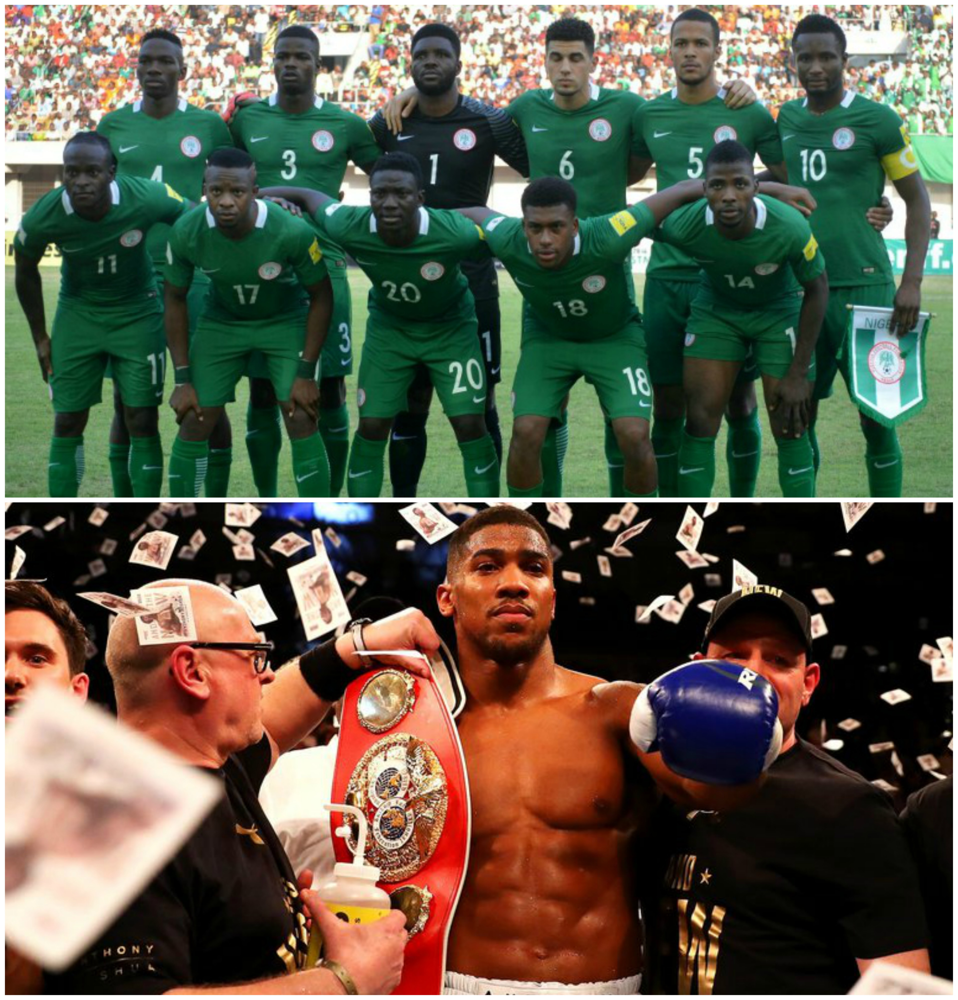

Culture
Food
When it comes to food, Nigeria is known for its diversity, variety and colour. The staple foods of nigeria include rice, yam and cassava. Nigerians eat a lot of starchy foods including eba(made from dried grated cassava), pounded yam and garri(made from cassava flakes). These starchy foods are eaten with various soups. These soups vary from state to state. Many states have their own native soup while others might share same soup but have their very own twist to the recipe. These soups inlude Egusi, Ogbono, Bitter Leaf, Vegetbale, Pepper and Okra along with many others. These soups also have controverstial names. One soup could have many different names depending on the state. Rice is a favourite. It is made in many different ways. It can be eaten boiled along with a red tomato stew or it can be made as a standalone meal. Fried rice and Jollof rice are the most popular rice dishes in nigeria. Jollof rice is one of the most popular dishes in Nigeria. In Nigeria no dish is complete without some form of meat. Nigerians eat all kinds of meat including beef, chicken, goat and certain animals found in the wild referred to as bush meat. As for fruit, there are many exotic kinds that grow in Nigeria. Including plantain, grapefruit, coconut, papaya, soursop, guava and mango along with other more common fruits like apples, pineapples, watermelons, bananas and oranges. Other meals worth mentioning include Moin Moin, Suya and Puff Puff.
Sports
When it comes the sport, Nigeria is largely a footballing nation. Nigeria aka The Super Eagles are currently ranked 50th in the FIFA world rankings but at one point in 1994 they were ranked 5th. Nigeria have qualfied for 6 World Cups but are still yet to win it. Although they haven't won the World Cup, nigeria have placed within the top three in the African Cup of Nations 14 times, winning 3 of these. Nigeria also have their own football league. Some of the most famous players from Nigeria include Jay Jay Okocha, John Obi Mikel and Nwankwo Kanu. Other sports that are played in Nigeria include basketball and boxing. The current heavy-weight boxing champion of the world, Anthony Oluwafemi Olaseni Joshua was born in Britain but spent the early years of his life in Nigeria as he mother was Nigerian. Before boxing for Team Britain in the 2012 Olympics he attempted to join the Nigerian national team but was turned away. He then went on to win gold and become the new Olympic champion.
Art
Nigeria is full of pottery, woodcarvings, stonework and bronzework. Many sculptures and monuments have been beautifully crafted in Nigeria and some even date back to B.C. These works of art were all handmade. The state of Benin is known for its woodcarvings. Many historic items if pottery can be found in Niger state and if it's bronze o stone works you are looking for they can be found in the south-western areas of Nigeria. Many of these works of arts were not made from the love of art but instead for religious or ritual reasons or to honour a king. Nigeria has mutiple museums where art from all over Nigeria are kept and preserved, the most popular being The National Museum in Lagos.
Music
Music in Nigeria is very diverse. Each state has their own traditional music where most songs would be sang in their spoken language. There are many Christian songs that give praise to God in Nigeria. Many of these songs are known all over the country and are usually in English. The more mainstream music in Nigeria is a style of Hip/Hop with a Nigerian/African vibe. The beats of the songs are usually upbeat and catchy with the artists mixing melodies with rapping. Most of the songs are in English, possibly with a few words of the song in the venecular tongue of the artist. The most popular Nigerian artist right now include Wizkid, Davido and Ycee. These artists are known across the world. Wizkid being to most sucessful has collaborated with Drake and Chris Brown.